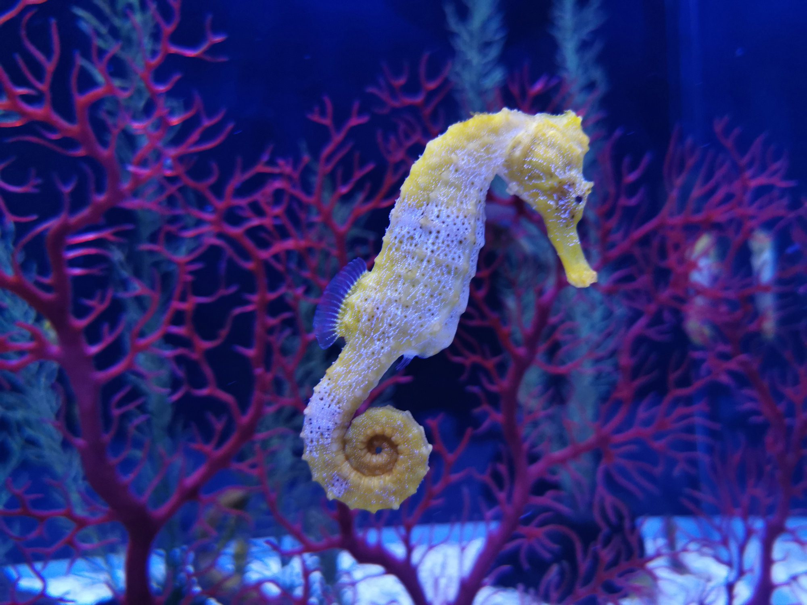

¿Qué son?
Los caballitos de mar son peces pequeños que viven en aguas poco profundas. Son conocidos por su forma única y por el hecho de que el macho es quien lleva los huevos hasta que nacen.
Características
Tienen una cola prensil que usan para sujetarse a plantas marinas. Además, pueden cambiar de color para camuflarse y protegerse de depredadores.
Imagen
